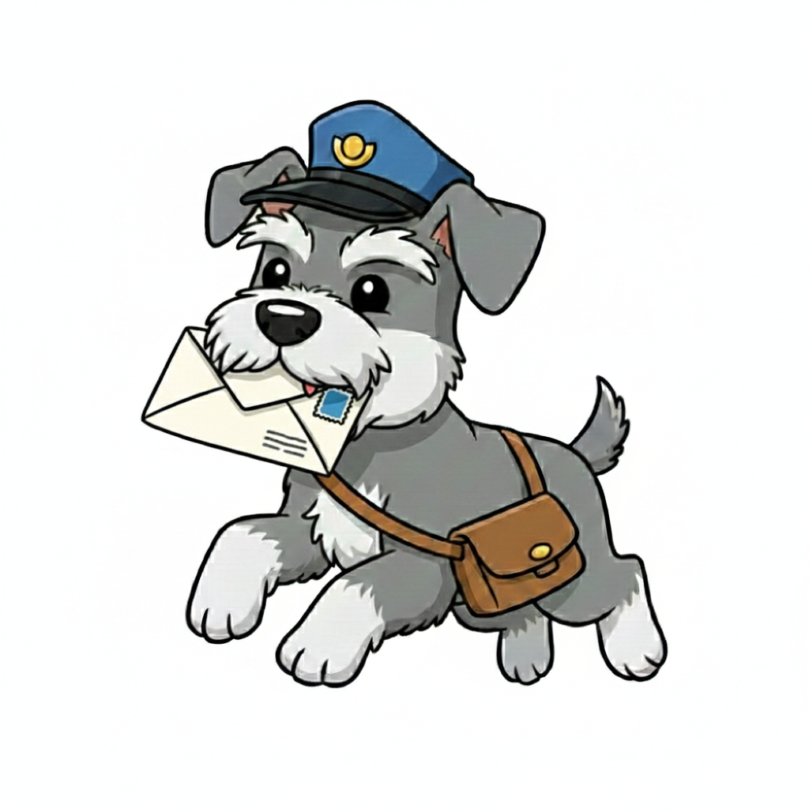

Al escribir esto no puedo evitar hacer un viaje en el tiempo y recordar la primera vez que quise tener un detalle especial contigo. Buscaba algo que fuera más allá de nuestras conversaciones diarias, algo capaz de romper por un momento la barrera de la distancia física y demostrarte el inmenso cariño que siento por ti. Así fue como nació aquella primera carta virtual entregada por Marcy, una idea sencilla a la que hoy vuelvo a darle vida. Como te dije en aquel momento, jamás imaginé que de ese grupo donde nos cruzamos llegaría a mi vida una persona tan especial. Hablar contigo me hace bien y te has convertido en una parte esencial de mi rutina. Eres como un pedacito de Costa Rica hecho persona: transmites la luz, la paz y la tranquilidad de los paisajes de tu tierra, siempre rodeada de una energía bonita y una vibra hermosa. Ten por seguro que eso es algo que nunca voy a dejar de admirar en ti.
Volviendo al presente, es triste reconocer que las cosas entre nosotros no están atravesando su mejor momento. Da mucho en qué pensar lo lejos que puede escalar un malentendido originado en redes sociales como TikTok o Instagram, y hasta dónde nos ha traído. Por eso, quiero ser totalmente transparente contigo sobre todo: sí llegué a revisar tu perfil, pero no con la intención que pudiste haber imaginado. Jamás buscaría reclamarte por algo que tú decidieras compartir. Reconozco que una vez si actué de un modo que pudo interpretarse así, y sé perfectamente que fue un error absoluto del cual me arrepiento de corazón. Mi intención nunca fue invadir tu espacio ni romper tu confianza. Si lo hacía, era simplemente para saber cómo te sentías y estar presente si llegabas a pasar por un momento difícil o de tristeza y lo externabas ahí, para apoyarte como el amigo que soy. También me ayudaba a conocer mejor las cosas que te apasionan, con el único fin de crear detalles pensados especialmente para ti. Ese era, en realidad, el único motivo por el que me importaba estar conectado contigo en redes.
También soy completamente consciente de otro aspecto que ha generado mucho desgaste entre nosotros, y asumo la responsabilidad absoluta: mi actitud ante tus ausencias y los reclamos que te hice. Tú sabes perfectamente lo importante que eres en mi vida. Por ese mismo cariño, siempre busqué proteger nuestra amistad; pero cuando percibía cierta distancia, me invadía la ansiedad y empezaba a sobrepensar todo. Si reaccioné de esa forma, fue por el constante miedo a cometer un error que te hiciera distanciarte definitivamente. Mi única intención era confirmar que seguíamos bien, impulsado por el gran valor que te doy y la idea de no perderte. Hoy entiendo lo contradictorio que resulta que ese mismo temor haya causado el agotamiento que sientes y nos haya traído a este límite.
Hoy entiendo que reconocer mis errores no borra mágicamente el desgaste que sentiste, pero necesitaba ser transparente contigo y hablarte con el corazón en la mano. Esta situación me ha obligado a mirarme hacia adentro y comprender que, a veces, en el afán de no perder a alguien importante, terminamos aferrándonos de un modo que sofoca. Aprendí,de la manera más dura, que cuidar un vínculo no significa vigilarlo ni exigirlo, sino aprender a darle paz y libertad a la otra persona. No escribo estas palabras para justificarme, ni para pedirte disculpas vacías, ni mucho menos para exigirte una respuesta o presionarte a cambiar lo que sientes. Respeto profundamente tu espacio, tu silencio y el momento en el que te encuentras. Mi único propósito era que supieras la verdad detrás de mis intenciones y que el afecto que siento por ti siempre fue genuino. Deseo de todo corazón que te vaya de lo mejor en cada proyecto y momento de tu vida. Sigue siendo esa persona luminosa, tranquila y bonita que tanto bien le hace a su entorno. Yo me quedo con una enorme gratitud por haber tenido la fortuna de coincidir contigo, por las risas, las lágrimas, por la confianza que en su momento compartimos y por haber conocido a una persona tan especial.
Gracias por todo Alesita
Iván